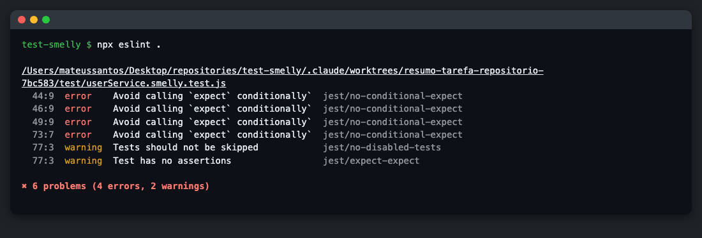

O ponto de partida foi o arquivo userService.smelly.test.js, que testa um serviço simples de cadastro de usuários. Antes de mexer em qualquer coisa, rodei npm test: 4 testes passaram e 1 foi pulado. Ou seja, a suíte está verde, mas, como vimos no trabalho de mutação, isso não diz muito sobre a qualidade dos testes. Primeiro procurei os problemas lendo o código, depois rodei o ESLint com o plugin do Jest e, por fim, reescrevi tudo em userService.clean.test.js, sem alterar o arquivo original.
O código está em github.com/mateusdsoc/test-smelly.
Encontrei cinco smells no arquivo. Abaixo estão os três que considero mais sérios. Os outros dois são um Eager Test, no teste que cria e busca o usuário ao mesmo tempo, e um test.skip vazio, que fica só com um TODO.
test('deve falhar ao criar usuário menor de idade', () => {
try {
userService.createUser('Menor', 'menor@email.com', 17);
} catch (e) {
expect(e.message).toBe('O usuário deve ser maior de idade.');
}
});A ideia do teste é garantir que um menor de idade não consiga se cadastrar. O problema é que o único expect está dentro do catch. Se o createUser parar de lançar o erro, o catch nunca roda, nenhuma verificação acontece e o Jest considera o teste aprovado.
Para confirmar, troquei if (idade < 18) por if (false) no userService.js, o que na prática remove a validação. O teste continuou passando. É o pior dos cinco smells, porque esconde exatamente o bug que deveria pegar: um menor de idade conseguiria se cadastrar e a suíte continuaria verde.
O teste de desativação (o código completo está na seção 3) percorre uma lista com um usuário comum e um admin e usa um if/else para decidir qual expect roda. São duas regras de negócio diferentes misturadas no mesmo teste, e quem lê precisa simular o loop de cabeça para saber o que está sendo verificado.
O risco é que os expect dependem do caminho que o código toma. Se a lista mudar ou a condição tiver um erro, parte das verificações deixa de rodar sem nenhum aviso. Além disso, quando o teste falha, o nome dele não diz se o problema foi com o usuário comum ou com o admin.
const linhaEsperada = `ID: ${usuario1.id}, Nome: Alice, Status: ativo\n`;
expect(relatorio).toContain(linhaEsperada);
expect(relatorio.startsWith('--- Relatório de Usuários ---')).toBe(true);O teste do relatório compara a linha exata, com vírgulas, espaços e quebra de linha, e o texto exato do cabeçalho. O próprio userService.js tem um comentário avisando que o formato do relatório pode mudar no futuro.
Com isso, o teste quebra por qualquer ajuste visual, como trocar a ordem dos campos ou mudar o título, mesmo que o relatório continue certo. Testes que falham sem ter bug fazem a equipe perder confiança neles, e aí começam a ser ignorados ou apagados.
Depois de instalar o eslint e o eslint-plugin-jest e criar o .eslintrc.json pedido no enunciado, rodei npx eslint .. Usei o ESLint 8 porque a versão 9 não lê mais o .eslintrc.json por padrão.

Foram 4 erros e 2 avisos, todos no arquivo de teste. Os três erros das linhas 44, 46 e 49 são os expect dentro do if/else do teste de desativação. O erro da linha 73 é o expect dentro do catch. A mesma regra, jest/no-conditional-expect, pegou os dois casos, o que faz sentido: para o linter os dois são o mesmo problema, um expect que pode não rodar. Os dois avisos da linha 77 são do test.skip: um por estar desativado e outro, da regra jest/expect-expect, por não ter nenhuma verificação. Essa segunda regra nem estava no .eslintrc.json; veio junto com o plugin:jest/recommended.
Comparando com a minha análise manual, a ferramenta encontrou 3 dos 5 smells na hora, já com a linha e o nome da regra. Ela não pegou o Eager Test nem o teste frágil, porque para isso seria preciso entender a intenção do teste, e não só a estrutura do código. Também vale notar que o caso mais grave, o try/catch, aparece como erro, e não como aviso. Ou seja, o linter automatiza a parte mecânica da revisão, mas a leitura do código continua sendo necessária.
Escolhi o teste de desativação para mostrar o antes e o depois, porque ele concentra 3 dos 6 problemas apontados pelo ESLint.
Antes (userService.smelly.test.js)
test('deve desativar usuários se eles não forem administradores', () => {
const usuarioComum = userService.createUser('Comum', 'comum@teste.com', 30);
const usuarioAdmin = userService.createUser('Admin', 'admin@teste.com', 40, true);
const todosOsUsuarios = [usuarioComum, usuarioAdmin];
for (const user of todosOsUsuarios) {
const resultado = userService.deactivateUser(user.id);
if (!user.isAdmin) {
expect(resultado).toBe(true);
const usuarioAtualizado = userService.getUserById(user.id);
expect(usuarioAtualizado.status).toBe('inativo');
} else {
expect(resultado).toBe(false);
}
}
});Depois (userService.clean.test.js)
test('desativa um usuário comum', () => {
const comum = cadastrar();
const desativou = userService.deactivateUser(comum.id);
expect(desativou).toBe(true);
expect(userService.getUserById(comum.id).status).toBe('inativo');
});
test('não desativa um administrador', () => {
const admin = cadastrar({ isAdmin: true });
const desativou = userService.deactivateUser(admin.id);
expect(desativou).toBe(false);
expect(userService.getUserById(admin.id).status).toBe('ativo');
});Separei os dois cenários em dois testes, e com isso o for e o if deixaram de ser necessários. Agora todo expect roda sempre, e se um teste falhar, o nome já diz qual regra quebrou. Cada teste segue o padrão AAA, com as três partes separadas por uma linha em branco: uma linha prepara o usuário, uma chama o método e o resto verifica o resultado. Também passei a verificar que o admin continua com status "ativo". No original só se olhava o retorno false, então um bug que desativasse o admin e mesmo assim retornasse false não seria percebido.
A função cadastrar, usada no arquivo todo, cria um usuário válido com valores padrão, e cada teste informa só o dado que importa para ele. Nos outros testes, a lógica foi parecida:
expect(() => cadastrar({ idade: 17 })).toThrow(...), que falha se o erro não for lançado.test.skip virou um teste de verdade para o relatório sem usuários.beforeEach deixou de usar o método interno _clearDB() e passou a recarregar o módulo com jest.resetModules(), para cada teste começar do zero.No fim, os 5 testes viraram 16. O ESLint não aponta nada no arquivo novo, e o npm test passa com as duas suítes. Para ter certeza de que os testes novos são melhores, e não só mais organizados, repeti a alteração no código com as duas suítes:
| Alteração no userService.js | Suíte smelly | Suíte clean |
|---|---|---|
if (idade < 18) virou if (false) | passa | falha em "recusa usuário com 17 anos" |
if (idade < 18) virou if (idade <= 18) | passa | falha em "aceita usuário com exatamente 18 anos" |
A segunda linha é um mutante de operador relacional, igual aos do trabalho anterior: a suíte antiga deixa ele sobreviver e a nova o mata.
O que mais me chamou atenção foi que a suíte original passava inteira e, mesmo assim, deixava passar um cadastro de menor de idade. Teste verde só quer dizer alguma coisa quando cada teste verifica uma coisa de cada vez, sempre roda suas verificações e olha para o comportamento, e não para detalhes de formatação. Depois da refatoração, os testes ficaram mais fáceis de ler, e quando um deles quebra, o nome já diz onde procurar.
O ESLint ajudou a encontrar rápido os problemas que dá para ver pela estrutura do código, e, se rodar no projeto toda vez, impede que eles voltem sem ninguém perceber. Ele não substitui a leitura dos testes, como mostraram o Eager Test e o teste frágil, mas tira essa parte repetitiva da revisão manual. Juntando as duas coisas, testes bem escritos e uma ferramenta rodando sempre, o código de teste fica mais fácil de manter conforme o projeto cresce, e os testes continuam pegando bugs de verdade.